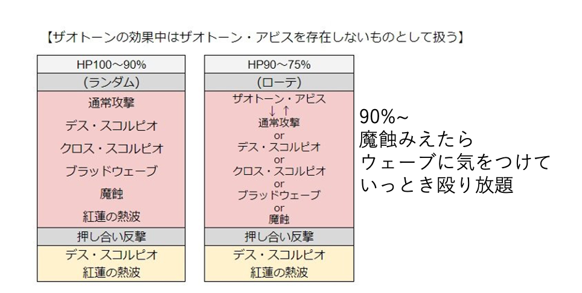

紅殻魔スコルパイド
強さ2 行動表へジャンプ
強さ3 行動表へジャンプ
強さ4 行動表へジャンプ
- 虫系
- 強さ1:炎氷風雷土0.3倍.光闇等倍
- 強さ2:炎氷風雷土0.1倍.光闇0.75倍
- 強さ3:炎氷風雷土無効.光闇0.7倍
- 構成
- 賢者:ヒーラー
- まも(前まも)
- まも(サポまも)
- 武闘家,踊り子
- 各職行動
- 賢者
- 開幕はむげんのさとり
- 壁更新もやる.
- 最初はいやしの雨で耐える.
- アビスにきせきの雨をあわせる.
- レボル,攻撃呪文も隙を見て.
- アビスにきせきの雨がおくれたら,アビス後のスタン時に雨更新できない.このときに必殺使うといい.回復量あがっていやしの雨分くらいベホマラーで行ける.
- 雨切れてるのにドルマドンとかしてたら終わる.雨を最優先.
- 回復しすぎくらいでちょうどいい.落ち着いて死ななければ勝てる.
- まも(前まも)
- ヒーラーとリンクするまもが前まも.ヒーラータゲの時に壁に入ってから.武闘家とかに壁スイッチ.自分は壁からはずれる.
- 開幕は少し下がってからリンクすればウェーブにも当たらない.開幕賢者にすぐにできない理由はないってこと.がんばる
- サポの近くに立つ.賢者はリンク先なので近づいては行けない.分散とかをサポまもと受ける.
- アビス時雷受けてしまったら壁の後ろに下がる.タゲ下がり発生させてきせきの雨を使わせてあげる.
- 下がる時は死毒の巻き込み注意.賢者の近くに行っては行けない.
- 踊り子のララバイが入ってる時は攻撃して回復することも大事.
- やばいときはサポまもとずらして雫つかってあげてもいい.
- アビス時には踊り子はさがってよみがえり節するので,前まもが壁に入る.
- 覇軍きたらロストしよう.間に合わないならやいば.
- まも(サポまも)
- ヒーラー以外のもう1人とリンクするまもがサポまも.武闘家の壁更新をサポートしたり,回復をしずくでサポートしたりする.
- 開幕は壁に入る.
- アビスが来たらしずくつかう.これがいちばんの仕事.賢者はそれを見て雨つかうので,キャンセルとかせずにしずく絶対投げる.
- 黄色の時は確定で円陣殺なので,アビス来た瞬間さそりに近づいてから雫.
- サポまもは前衛とリンクなので,壁に入ったりして2人で食らったりしないようにする.
- クロックチャージは5分かかる.無駄にしない.誰かが死んだ時.
- 壁を絶対最優先に.
- 葉っぱ蘇生もしてあげる. 1戦闘で3枚まで.開幕からガンガン使うのは良くない.
- 踊り子(前衛)
- 壁に入ることが最優先.
- 踊り子なら,右手短剣,左手扇とか.(左クローリスだと毒の成功率も上がる.さそりは毒耐性そこそこある.けどまあ右手短剣で,あとは自由に.)
- 証は夢幻魔王のテンション消費なしとか.攻撃もりもりでもHPは足りる.
- タナトスハントで攻撃.戦鬼などのバフで火力の底上げ.
- アビス時にはよみがえり節でしずくの代わりしたり.アビス中の回復のララバイで攻撃に耐えやすくしたり.
- たまには魔力のバラードでMP気にしたり,賢者のために祈りのゴスペルしたりすると最強です!!!!
- 基本の立ち位置はさそりの正面.メイン壁.
- 前まもにもちょっとは壁に入ってもらいけど.バフも入れやすいし.
- タナトスの範囲は2mなので,熱波とか覇軍避けるのめっちゃ難しい.攻撃したら下がる.攻撃したらさがる.
- さそりが動き出したらたちどまる.うごいてると壁抜けの原因になる.
- ツッコミ避けは賢者の位置次第では失敗するから,歩いて避けられるように考えておきたい.
- 分散は賢者とうける.前まもも壁に入ってるなら前まもと.
- 賢者タゲの分散は踊り子が下がって一緒に受けてあげる.
- 神速シャンソンで高速化して,ヴァイパー,タナトス,ひたすらタナトス,タナトス
- タナトスは短いので,全ての行動に差し込むことができる.
- クロススコルピオ(6秒)と絶(5.8秒)には最速で2回タナトスできる.
- [つるぎの舞]
ヴァイパータナトスする時間がない時や,ヴァイパーいれてもアビスや覇軍で毒解除されそうな時に様子見に使う.それかウェーブとかに合わせて. - [オネロスハント]
アビス明けのダウン時にはオネロスハントが強い.タイミング合えば荒神の舞→オネロスをきめたい. - [ネメシスエッジ]
テンション吐き出しよう.荒神がダウンに合わせられなかった時とか,ダメージはオネロスの方が高いので,オネロスを優先しよう. - だけど攻撃だけじゃなくてバフを撒く,勝てるのは踊り子の攻撃のおかげじゃなくて,バフのおかげ.
- [戦鬼の乱れ舞]
CT45秒,効果90秒.に段階まで可能で,合計30,30で60アップする.だから重ねてもいい. - [回復のララバイ]
CT90秒,攻撃時HP回復.効果60秒.これときせきの雨があれば賢者が死んでもアビスを乗り切れるくらい強い.アビス突入時によみがえり→ララバイという使い方する. - [魔力のバラード]
攻撃時MP回復.上限回復量は10でちょっと弱い.でも毒が消えてからアビス前の暇な時とかに使ったり. - [祈りのゴスペル]
回復呪文威力2段階アップ.賢者が死んでしまった時によみがえりで前まもと賢者を蘇生して,賢者に祈りかけてあげると英雄になれる.... - [もうどくのブルース]
あまりかからないけど,アビス前とかに毒が切れた時に使うと,まもで毒かかったりしてラッキーだったり. - [よみがえり節]
CT45秒,神速あれば発動0.2秒くらい.早すぎる....早すぎで見えないけど,内部ではしっかり回復してる.450くらい回復するベホマラーにも使える.アビスに突入したら壁はまえまもに任せて,踊り子は下がってウェーブに当たらない位置でよみがえり節. - [荒神の舞]
だいたい3段階くらい全員のテンション上げる.荒神→ネメシスってやるよりもタナトス3回の方がつよいので,タイミングを考える.自分のネメシスに合わせるってよりは,まもの悶絶にあわせるって感じ.まもの双竜に合わせても上限が1999なので,全然意味ない,タナトスやった方がマシでむしろDPSマイナスってこともある.必殺チャージしたら叫んで,CT技の準備をしてもらおう. - なんか前足側面でタナトスするとウェーブに当たってしまうことがある.めり込んでいってさそりと重なってくらってる..?
- 覇軍のロストも意識しよう,まもがやるべき,踊りがやるべき,派閥がある.もうどっちもやろう!
- 必要装備
- 即死ガード,毒ガード100%は必須.
- あとは攻撃力とかHPもりもりで.
- HP多ければひきよせ,まよけの鈴も装備したい.
- 竜のうろこ,打たれ名人(宝珠,パッシブの被ダメ-10
強さでダメージは変わるので雰囲気だけ..
- 通常攻撃
- クロススコルピオ→扇状範囲2回攻撃.
- デススコルピオ→対象範囲2回攻撃+即死
- ブラッドウェーブ→直線即死2回攻撃.
- 魔蝕→自分周囲にダメージ+全属性低下+攻撃力2Down+守備力2Down+混乱+幻惑+呪い(最大HP大ダウン).
- 紅蓮の熱波→自分周囲ダメージ2回+ふっとび転+有利な状態解除+自分の不利な状態解除.これでリンクも解除されるから1人しか死なないのかな.
- ザオトーン→エリア全体/蘇生を封印する空間を作り出す(60秒間)+不利な状態解除※ザオトーン終了後に敵が行動不能になり,徐々にHPを回復する
- 死毒の旋風→対象周囲/約820ダメージ(Ⅱ:約870、Ⅲ:約930)+猛毒(3秒毎にHP90減)
- 分散する災禍→攻撃/対象周囲/合計約600ダメージx2回 (Ⅱ:合計約750x2回、Ⅲ:合計約1000x2回)※受けた人数で頭割りダメージ
- 円陣殺→ドーナツ状範囲/9999ダメージ+行動間隔2Down +全属性耐性低下+幻惑+呪い.テンペスト的な..
- 覇軍の法→自分周囲(広範囲)/守備力0+移動速度低下+スタン+ふっとび転+有利な状態解除+自分を強化(テンション1Up・行動間隔2Up・攻撃時にHP回復)※敵の強化は洗礼等で解除可能
- ザオトーン・アビス→ザオトーン+地面に電気を帯電させる(数秒おきに3か所で爆発.約250ダメージ) (Ⅱ:300、Ⅲ:350)
- 深紅の血陣→設置範囲(3個)/約700ダメージx2回(Ⅱ:約750x2回、Ⅲ:約800x2回)+有利な状態解除+攻撃力2Down+守備力2Down+行動間隔2Down.※3人の足元に設置される
強さ1
行動
・100~75% AI2
・75%~50% AI2
・50~25% AI2
- ザオトーン→円陣殺→ブラッドウェーブ→分散する災禍
・25%~ AI2
- ザオトーン・アビス→死毒/分散→魔蝕/B
強さ2
行動
・100%~75% AI2

・75~50% AI2
・50~25% AI2
- ザオトーン→円陣殺→ブラッドウェーブ
・25~0% AI2
- (最初のみ)先兵召集の号砲
- 黄色以降はランダムばっかり,吸収常に警戒しよう.
強さ3
行動
・100%~75% AI2
・75~50% AI2
・50~25% AI3
- ザオトーン→円陣殺
・25~0% AI3
- クロス,分散,絶,血陣が見えたらCモード,ザオトーンがいつ来てもおかしくない.置き雨を狙う.
強さ4
行動
・100%~75% AI2 AI3
- 90%まではAI2 それ以降ずっとAI3.
- 90%~ 魔蝕みえたら殴り放題．
- 75%までは蠍がダウンしてから30秒後にアビス確定
- 死毒，分散，絶が増えたら75%突入
・75~50% AI3
- 死毒，ウェーブ，熱波が見えたらザオトーン注意．
・50~25% AI3
- ザオトーン→円陣殺(CT45秒)
- 円陣見えて35秒くらい数えとこう．
- Bモードの覇軍注意，Aのあと通常見えたらBの可能性あり．
- 覇軍でピオラかかってからは，AI無限といえるくらい早い.
- 分散，絶，熱波が見えたらザオトーンに注意.ザオトーンまでウェーブなし.
- 反撃でデスが来たら次アビス確定
・25~0% AI3
- クロス,分散,絶,血陣が見えたらCモード,ザオトーンがいつ来てもおかしくない.置き雨を狙う.
- そのとき，ザオトーンまでウェーブなし
- Aモードで魔蝕選択されたら，A繰り返し，また死毒とか気を付ける．分散→魔蝕→分散とか
- Cの血陣→分散に注意．